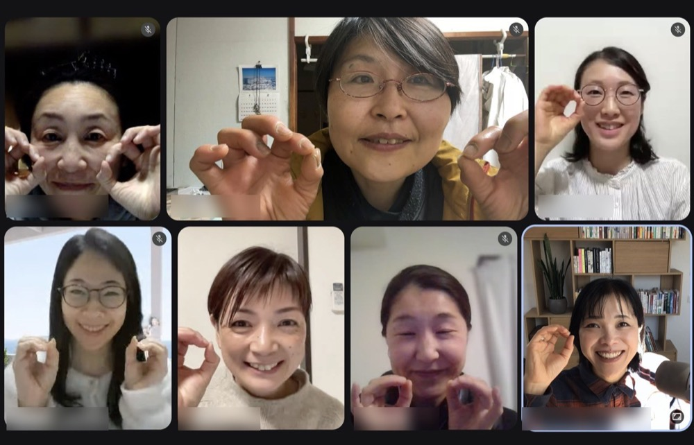
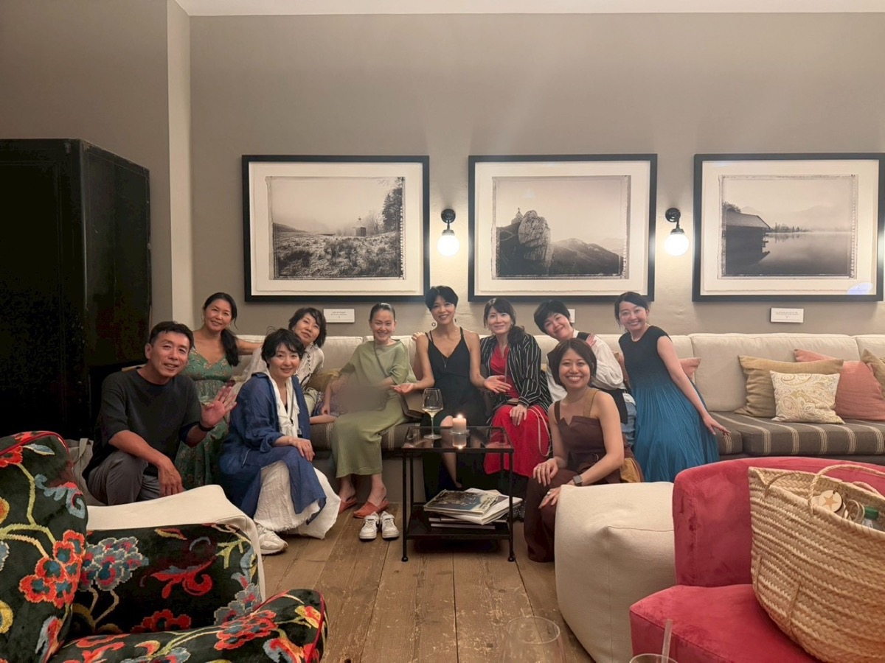
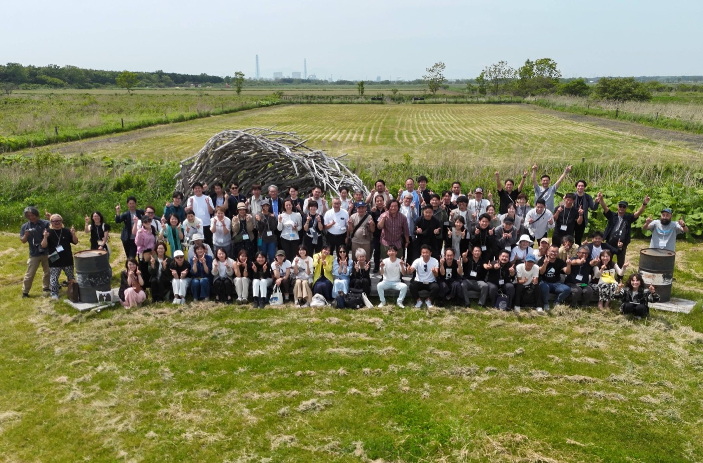

その先にあるもの
「なんで？」に、
「なんで？」に、
自分の言葉で答えられるように

私が手にしてほしいのは、
資格そのものだけではありません。
お店で、講座で、商品の説明をしているとき「それって、なんでですか？」と聞かれて、
一瞬止まって「たしか……」
一瞬止まって「たしか……」
▼
これから「それはね」と
自分の言葉で話せる
自分の言葉で話せる
「きちんと学んだ」
自分自身が納得して
オーガニックを扱えることです。
IOB認定試験に合格した
方たちの声です
 ▶ 動画で見る
▶ 動画で見る
川田むつみさん
オーガニックスーパー経営・IOB認定地域講師
お客さまに「オーガニックって
「本当しどろもどろになったし、頭真っ白になったし」。
いまは、平日毎日のインスタライブで発信を続けています。
社員の方にもコースで学んでもらい、2名が資格を取りました。
 ▶ 動画で見る
▶ 動画で見る
猿田一生さん
美容室オーナー・日本サステナブルサロン協会 代表理事
「従業員時代はこの想いが理解されず、日々孤独を感じていました」。
学んだ知識をもとに、
サロンの基準をつくり、
2021年、日本初となる
サステナブルヘアサロン協会を
立ち上げました。
 ▶ 動画で見る
▶ 動画で見る
森奈央さん
量り売りのオーガニック店・IOB認定地域講師
「お店に来てくださるって方は、やはりオーガニックに興味がある方なんです」。
興味のない人には、届けられていませんでした。
いまは、お店の外で地域講座を開いています。
「私も何かできることで協力をしたいです」という声が届くようになりました。
 ▶ 動画で見る
▶ 動画で見る
北村渚さん
メイクカウンセラー（オーガニックコスメ専門家コース）
「一般のコスメとの違いっていうのを、うまく自分の中で理解できてなくて、人にも伝えられない」。
コースを終えた翌日に開業届を出しました。
「ゼロだったオーガニックコスメの知識を、IOBで学んだことで本当に自信になって企業さんからのご依頼もいただくようになりました」。
学びを続ける仲間がいます


